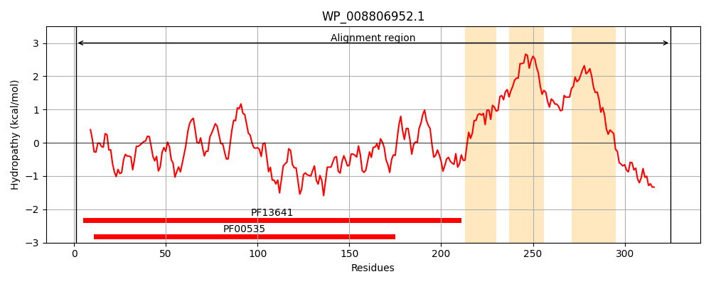
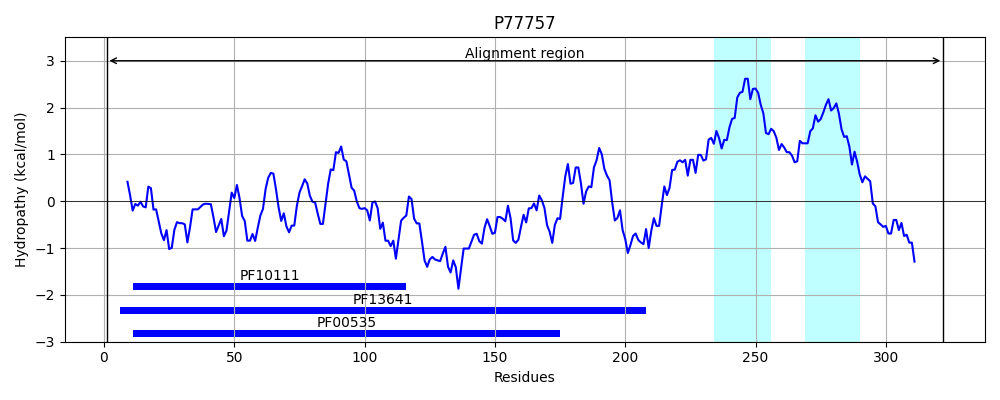
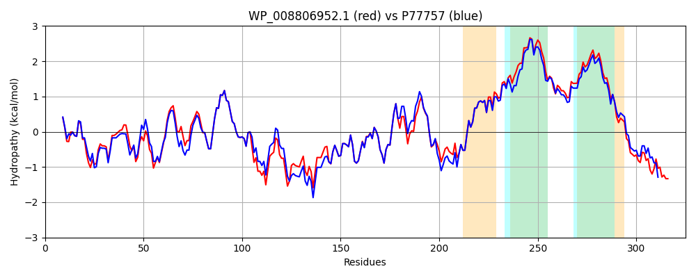

Hit Accession: P77757
Hit TCID: 4.D.1.1.13
Hit Description: gnl|BL_ORD_ID|11536 gnl|TC-DB|P77757|4.D.1.1.13 Undecaprenyl-phosphate 4-deoxy-4-formamido-L-arabinose transferase OS=Escherichia coli (strain K12) GN=arnC PE=1 SV=1
Mach Len: 325
e:0.000000
Query TMS Count : 3
Hit TMS Count: 2
TMS-Overlap Score: 2.000000
Predicted Substrates:None
BLAST Alignment:
Score: 1415 , Bit scores: 549 bits, E-value: 0.0e+00, Alignment length: 325, Percentage identity: 84
Query: 1 MLTYPPVKKVSVVIPVYNEQDSLPELLRRTDTACATLGRQYEILLIDDGSSDDSARMLTEAAEAEGSHVVAVLLNRNYGQHSAIMAGFSHVTGDLIITLDADLQNPPEEIPRLVEKADEGYDVVGTVRQNRQDSIFRKSASKMINRLIQRTTGKAMGDYGCMLRAYRRHIIDAMLNCHERSTFIPILANTFARRAVEIPVMHAEREFGDSKYSFMRLINLMYDLVTCLTTTPLRLLSIFGSVIALLGFAFGLLLVVLRLAFGPQWAAEGVFMLFAVLFMFIGAQFIGMGLLGEYIGRIYNDVRARPRYFIQRVVRQPETASKEED 325
M PVKKVSVVIPVYNEQ+SLPEL+RRT TAC +LG++YEILLIDDGSSD+SA ML EA++AE SH+V++LLNRNYGQHSAIMAGFSHVTGDLIITLDADLQNPPEEIPRLV KADEGYDVVGTVRQNRQDS FRK+ASKMINRLIQRTTGKAMGDYGCMLRAYRRHI+DAML+CHERSTFIPILAN FARRA+EIPV HAEREFG+SKYSFMRLINLMYDLVTCLTTTPLR+LS+ GS+IA+ GF+ +LLV+LRL FGPQWAAEGVFMLFAVLF FIGAQFIGMGLLGEYIGRIY DVRARPRYF+Q+V+R +SKE +
Sbjct: 1 MFEIHPVKKVSVVIPVYNEQESLPELIRRTTTACESLGKEYEILLIDDGSSDNSAHMLVEASQAENSHIVSILLNRNYGQHSAIMAGFSHVTGDLIITLDADLQNPPEEIPRLVAKADEGYDVVGTVRQNRQDSWFRKTASKMINRLIQRTTGKAMGDYGCMLRAYRRHIVDAMLHCHERSTFIPILANIFARRAIEIPVHHAEREFGESKYSFMRLINLMYDLVTCLTTTPLRMLSLLGSIIAIGGFSIAVLLVILRLTFGPQWAAEGVFMLFAVLFTFIGAQFIGMGLLGEYIGRIYTDVRARPRYFVQQVIR---PSSKENE 322 | Protein Hydropathy Plots: |
|---|
|  |  |
Pairwise Alignment-Hydropathy Plot:
|
|---|
|  |